Step 8: Property Proving
Contents
Introduction
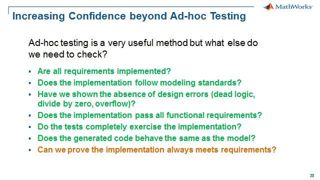
Up until now, our discussion on Verification and Validation has been centered on testing using a set of test vectors as the input. Test vectors can be generated by an engineer working from a requirements document or automatically generated using Simulink Design Verifier. The goal of course is to achieve 100% MCDC coverage using requirement- or function-based test vectors. As one can imagine, this method can be time-consuming, but there is always room for potential errors to occur.
When it comes to requirements that are critical for safety reasons or have significant importance, it is always good to have different methods for looking at the same problem, or redundancy in the verification. This will add quality to the final product.
In general, the quality of the verification process is a function of your input vectors. In an ideal world, every combination of states, timing sequence, etc. needs to be checked. However, this is often not practical due to the time and effort that would be required. This gap often results in model error caused by race or initialization conditions. With that in mind, we are going to introduce a different method of verification called Property Proving. The idea behind this method is that instead of engineers generating numerous test vectors, engineers would "model" the requirement or property and ask the tool to "prove" that the implementation or design meets the requirement or property.
The tool we are going to use is Simulink Design Verifier, the same tool we used for design error detection and automatic test generation. Simulink Design Verifier extends Simulink by using formal methods to deterministically prove or disprove your implementation model. We need to acknowledge that the underlying technology of the tool is from Prover® Technology, a technology that is proven in other software environments.
Verification and Validation Tools Used
- Simulink Design Verifier
Reproducing the Field Issue
With the previous steps in the workshop we found design issues and fixed them early. With the increased confidence from the earlier work we thought we were ready for field testing. We were suprised when the field calibrator reported this issue:

Problem: While going downhill, target speed increases with “reduce speed” button and assumes random values
How can we debug the issues found in the field?
- Reproduce field issue in Simulink: Use field calibration values and set inputs manually or replay data if it exists
- But this is just “one” more test case that covers a subset of all possible input ranges, sequences and calibration values
- We already have requirements based test vectors, 100% coverage, and all passed
- How do I know that this will not happen with a different set of conditions? Road conditions, driver inputs, calibration values and/or sequence of events
Let's use Simulink Design Verifier to help reproduce this test conditon. To do this we will model the field issue in Simulink:
- Create model of field issue behavior
- Constrain the inputs to represent the field issue
- Ask Simulink Design Verifier to prove whether errant condition can occur
To see how we can model this field issue, do the following:
1. Open CruiseControl_pp.slx with the field issue model – click here.
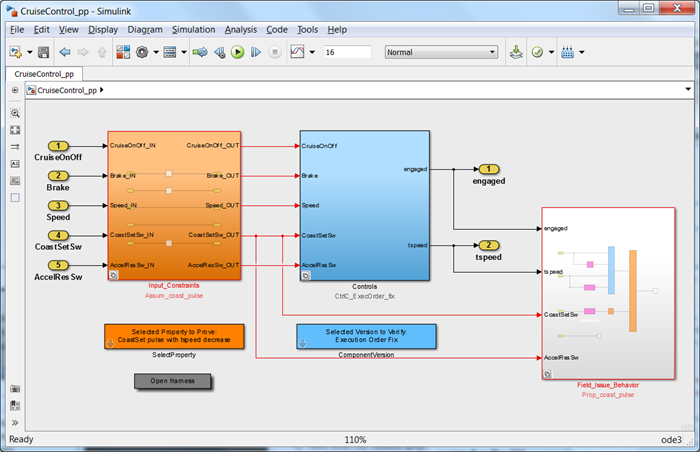
2. Examine the contents of the property proving model.
The left subsystem block, Input_Constraints contains the input constraints to match the field issue including:
- Cruise power was always on
- Brake was always off
- Increase speed button (AccelResSW) was always off
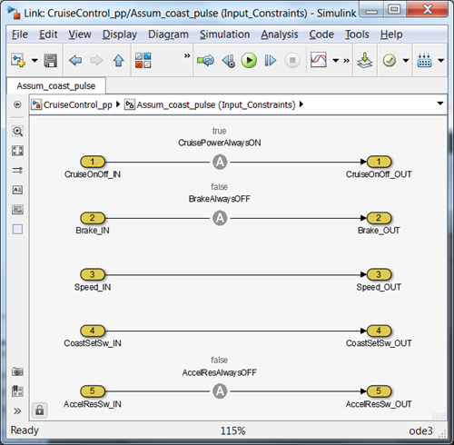
The center subsystem block, Controls contains our cruise control algorithm we tested before going to the vehicle.
The right subsystem block, Field_Issue_Behavior contains a model of the behavior as described in the problem report e-mail above:
- Target speed was already set once, so it was an engaged "during" event
- Pulsing the "reduce speed" button, so it was off the time step before
- The target speed increased with the "reduce speed" button. This should never happen so this is set to "false" with the NOT block and we will ask the tool to prove that this can never happen. If it can't prove this true then it will create a test to show how it is false.
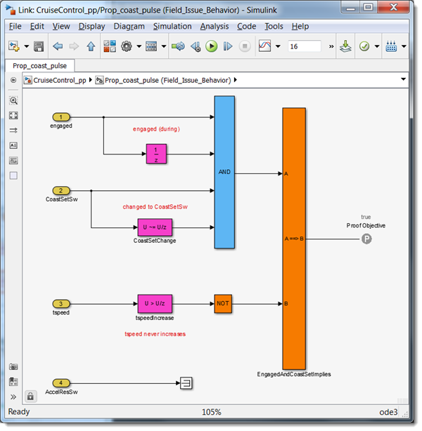
Simulink Design Verifier provides a library that we used to in the Input_Constraints subsystem and the Field_Issue_Behavior subsystem to identify how signals are constrained (Assumptions) and what signals are proofs (Proof Objectives).
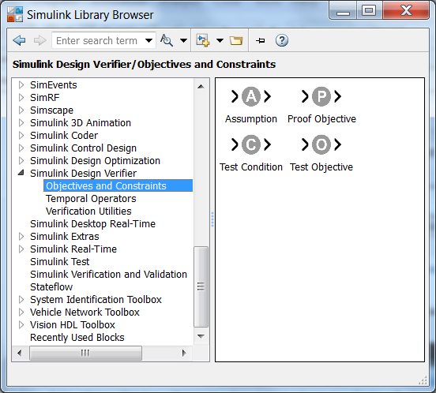
3. Run the analysis, select Analysis, Design Verifier, Prove Properties and then Model.
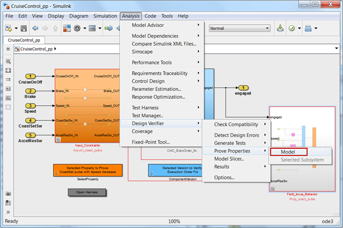
The progress window list the current tasks of the analysis including compiling the model and translating the model to what is required by the formal analysis engine of Simulink Design Verifier.
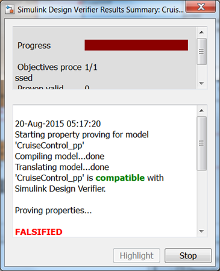
The Simulink Design Verifier Results Inspector window appears to provide a summary of the results including hyperlinks to the harness model and the analysis report. The results shown in the window indicates that Simulink Design Verifier has falsified the proof, which is also displayed on the Field_Issue_Behavior subsystem as a red outline indicating the proof objective inside has been falsified.
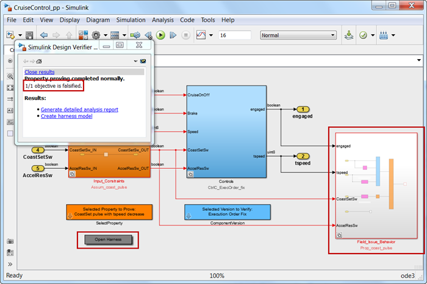
4. To open the generated harness, and begin debugging the issue, double-click the Open Harness block. This will bring up a preconfigured harness window that will assist the debugging effort.

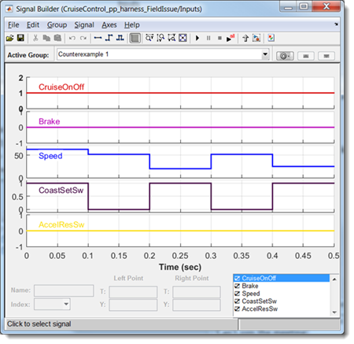
5. Run the test case and open Simulation Data Inspector (SDI).
6. Configure SDI to be a 3x1 format
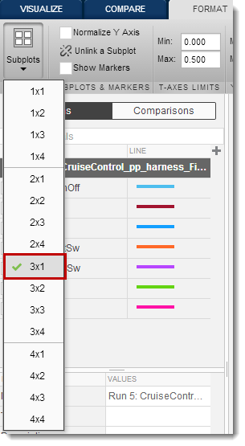
7. Assign tspeed to the top plot, CoastSetSw to the middle plot and AccelResSw to the bottom plot
8. Press the icon on the toolstrip shown below to fit the data
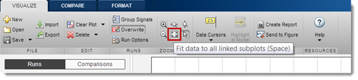
9. Select Overwrite Run so each subsequent run will overwrite the previous run and be displayed on the plots.
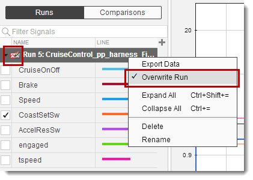
10. Select Data Cursors then Two cursors. Position the cursors at (0.3) and (0.4) seconds.
SDI window should now look like this:
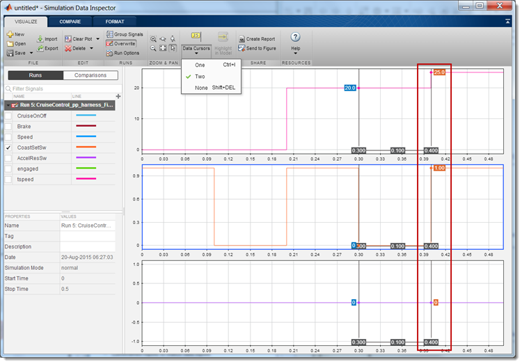
Notice the target speed has increase from (20) to (25) when the CoastSetSw (reduce speed button) was pushed. We will re-run the simulation but this time we will look at the logic to debug the issue.
11. Open the Compute target speed state chart
12. Restart the simulation, but this time use the single-stepping buttons.
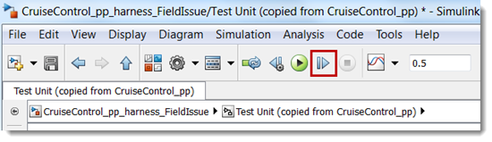
13. Repeat single-stepping until the simulation time is (0.4), observing the behavior in the state chart. At (0.4) notice the path as shown below.

The bug is a "sneak path" that was not detected with our simulation tests but was found in the field by the calibrator and reproduce in the model with Property Proving.
14. Select the fix by double-clicking the ComponentVersion and selecting Execution Order Sneak Fix from the dropdown. Make sure you select this in the CruiseControl_pp_harness_FieldIssue model and not CruiseControl_pp.
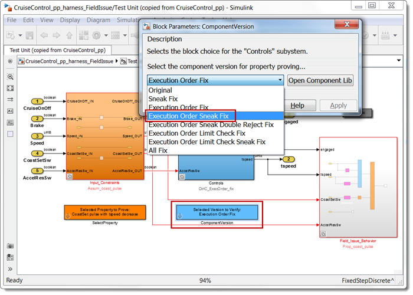
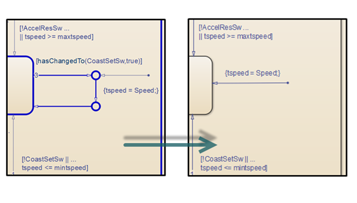
15. Rerun the simulation with the fix and view the results in SDI.
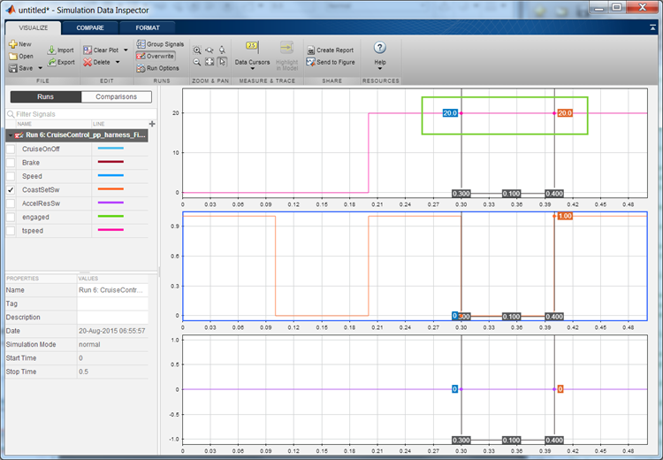
Proving the Model will Meet Requirements
In the previous section we used Simulink Design Verifier to reproduce a field issue. This is using the tool in a "reactive" mode, what about using the tool in a "proactive" way? We can certainly model a requirement in a more general way than a field issue and ask the tool to falsify or show a way for the implementation to not meet requirements. So underlying the field issue is a requirement:

To see how we can model this field issue, do the following:
1. Open CruiseControl_pp.slx with the requirement behavior model – click here.
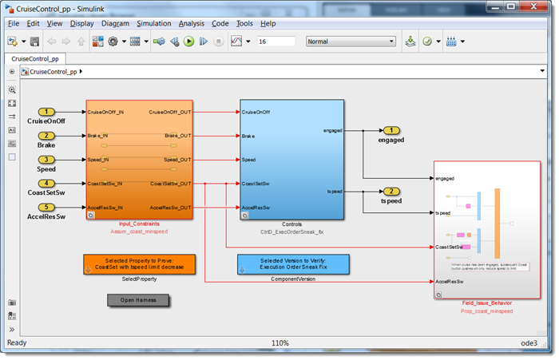
2. Examine the contents of the property proving model.
The left subsystem block, Input_Constraints contains the input constraints to match the requirement. So in this case, there are no constraints specified by the requirement.

The center subsystem block, Controls again contains our cruise control algorithm we tested before going to the vehicle plus the "sneak" fix that we created in the previous section.
The right subsystem block, Field_Issue_Behavior contains a model of the behavior as described in the problem report e-mail above:
- Applies only to the engaged "during" condition
- No constraint on whether the "reduce speed" is being pulsed, held or any other sequence
- The target speed should not increase with the "reduce speed" button
- AND the target speed should never fall below the limit
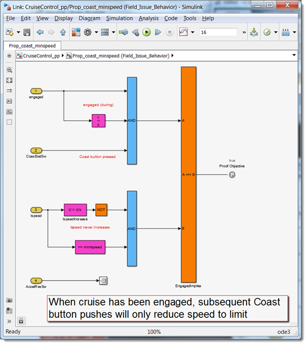
3. Run the analysis, select Analysis, Design Verifier, Prove Properties and then Model.
The Simulink Design Verifier Results Inspector window appears as before to provide a summary of the results. The result shown in the window indicates that Simulink Design Verifier has falsified the "requirement" proof, which is also shown on the Field_Issue_Behavior subsystem as a red outline indicating the proof objective inside has been falsified.
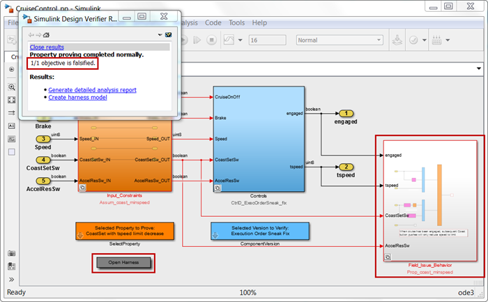
4. To open the generated harness, and begin debugging the issue, double-click the Open Harness block. This will bring up a preconfigured harness window that will assist the debugging effort.
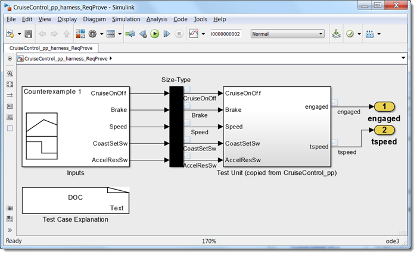
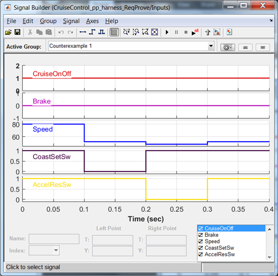
5. Run the test case
6. Open Simulation Data Inspector (SDI). It should still be configured properly from the previous section.
7. Position the cursors at (0.2) and (0.3) seconds.
SDI window should now look like this:
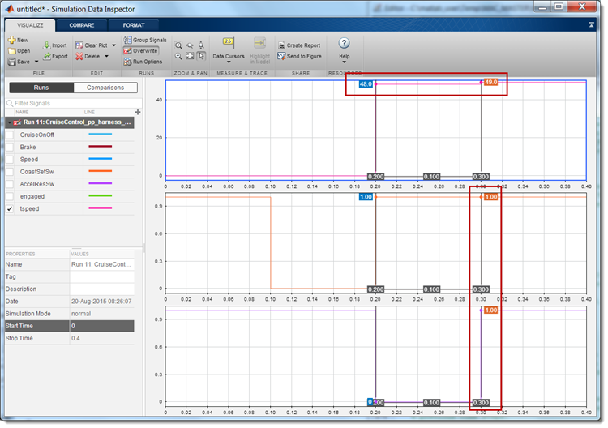
Based on the results in SDI, Simulink Design Verifier falsified our requirement by creating a test case with simultaneous "push" of both the CoastSetSw (reduce speed button) and the AccelResSw (increase speed button).
8. Single-step the simulation to see the behavior in the Compute target speed state chart. You may want to "Enable stepping back" to replay the previous time steps.
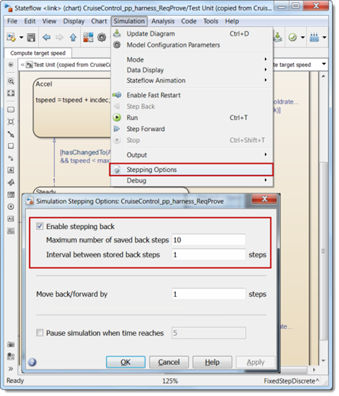
In the CruiseControl logic you can see that it takes the "increase speed" path due to the execution order in the state chart.
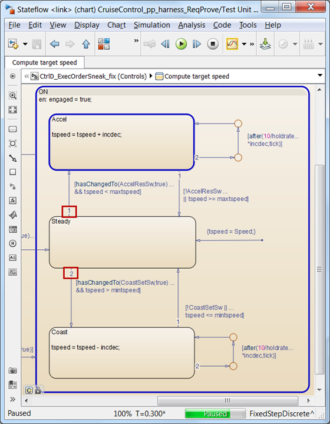
The order was not specified in the requirement so it is not behavior that is owned by a requirement, and it is not really intended behavior. You could argue that this behavior is random, and had a 50% chance of being part of the design. One way to handle this is to add a requirement that would reject a double press event, and then add the implemenation as shown below.
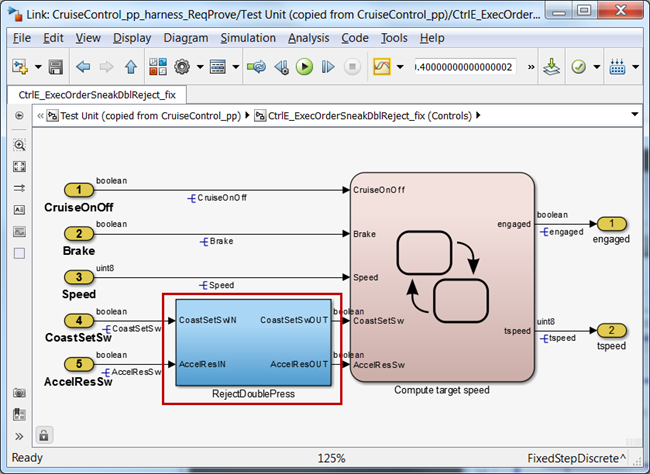
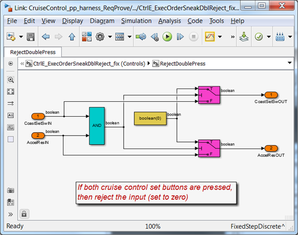
9. To use this fix, Execution Order Sneak Double Reject Fix in the harness, double-click the Component Version block and select this version.
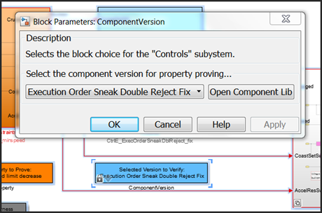
10. Rerun the simulation with the fix and view the results in SDI.
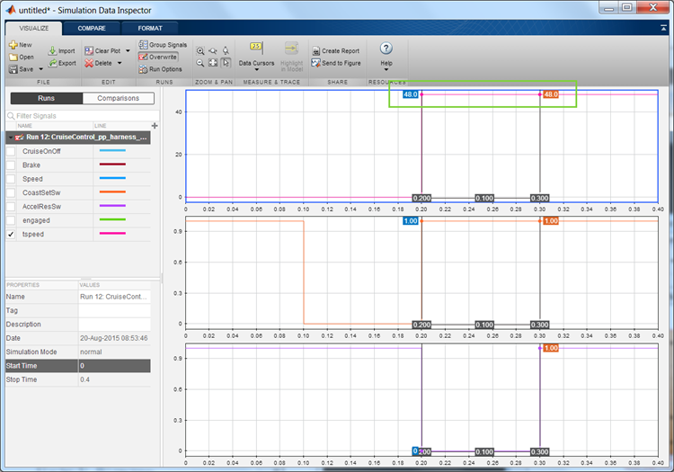
11. Close the harness model and go back to the original model CruiseControl_pp. We need to update the Controls block with the fix. Double-click the Component Version block and select Execution Order Sneak Double Reject Fix version.
12. Save the model.
13. Now re-run Property Proving on the model. Select Analysis, Design Verifier, Prove Properties and then Model.
The Simulink Design Verifier Results Inspector window appears as before to provide a summary of the results. The result shown in the window indicates that Simulink Design Verifier has proven that we will always meet the requirement as modeled in the Field_Issue_Behavior subsystem, and now the subsystem as a green outline indicating the proof objective was proven valid.
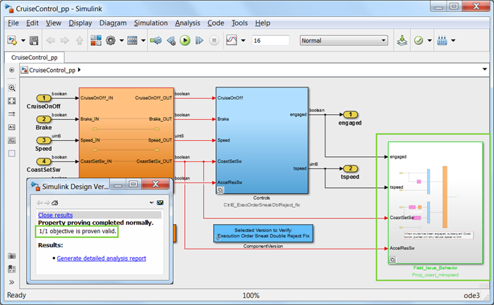
Summary
During the Property Proving we have demonstrated that Simulink Design Verifier can be used to:
- "Reactively" reproduce, debug and fix field issues
- "Proactively" prove the implementation will meet requirements
In both use cases, a test case and harness will be generated to help isolate and fix the issue the analysis uncovered. Once the issue has been resolved in the harness then we need to go back to the Property Proving model to ask if Simulink Design Verifier can find other test cases to falsify our proofs. The key takeaway is that you save the property models to rerun Property Proving on each new version of the implementation.
In the workshop we used Property Proving in a "reactive" manner to show it can help with hard to reproduce field issues. But going forward we would make Property Proving as part of "proactive" workflow where we would select several key or safety critical requirements to run on our implementation before our code generation/verification step.
It is interesting to note that we diligently ran our requirements based simulation tests, passed the functional tests with 100% coverage and still there may be issues. Formal methods test more of the design or operating space than simulation based test methods as shown below.
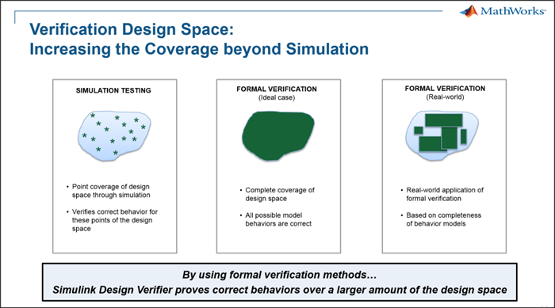
The Property Proving step of the process is about having confidence in our design meeting requirements across a greater range of operating conditions. We have now answered all the questions as we have now demonstrated a structured and formal testing framework for securing the quality, robustness and safety of our cruise controller.
CONGRATULATIONS! YOU HAVE NOW COMPLETED ALL THE WORKSHOP EXERCISES!
- When you are finished, close all models and files - or click here.
- Go to Step 9: Workflow Summary - click here.